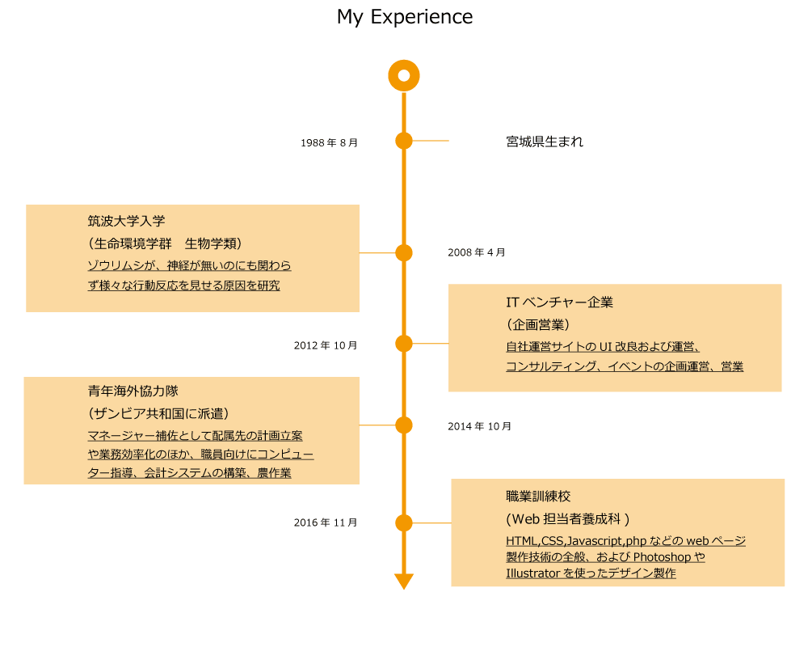

-
Nichika Yoshida | 吉田 二千翔
- アフリカ(ザンビア)でコンピューター指導や会計システムを作るなかで、誰でも難なく使いこなせ、かつ魅力的な外観のサイト・アプリの制作に興味を持った。しかしWeb製作の知識はゼロだったため、職業訓練校のWeb担当者養成科（4ヶ月間）にて学習した。
- ＜経歴＞
2013年に筑波大学を卒業（生物学専攻）。 2014年から2016年まで、青年海外協力隊として二年間、アフリカ南部のザンビア共和国で生活。配属先の収入向上のため、各事業のデータ収集、分析、農業、パソコン技術などを支援してきた。
- ＜趣味＞
Web系の情報収集、散歩、下町散策、古本・音楽（特に60年代）・美術（特にエコール・ド・パリ）巡り。
- ＜スキル＞
HTML5, CSS3, Javascript/jQuery, PHP, Dreamweaver, Word Press, Photoshop, Illustrator
- ＜使用オンライン学習ツール＞
Progate(Level: 190) *2017.03.28現在, ドットインストール
-
